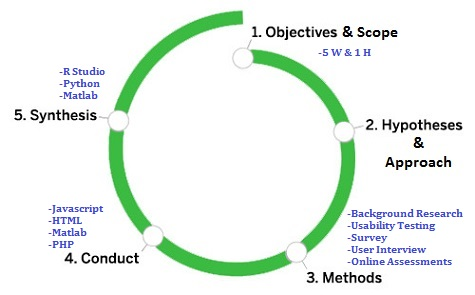
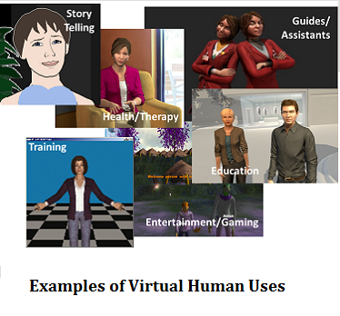
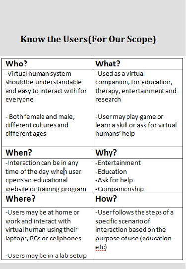
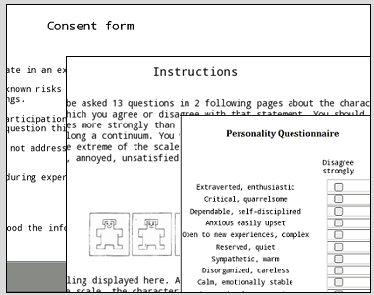
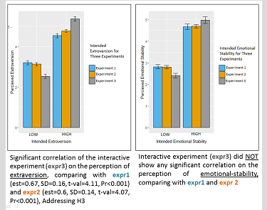

UX Research on Interaction with Virtual Humans
The existing models for simulation of personality and emotion are usually abstract, mathematically very complex, and do not have any interface for interaction with users. I designed a novel model for simulation of personality which can be evaluated in real-time. To evaluate the model I used virtual humans and simulated their personality and emotion using my model. This novel feature of my model allows investigation in how people perceive the generated personality and how the real-time interaction affects their interaction. The user experience research approach I used (see figure above) is very similar to Erin Sanders's 5 steps model. The following is a brief review of each step.
-

Objective The first step was to clear out the objective of the research. To do that I did a background research in the area of virtual humans, chatbot systems and their applications. I also did an expert interview with two researchers from psychology and cognitive science faculties as possible users of my system to see their possible requirements and interests. The result of this investigation showed the two most important features needed for the system were 1) believability and 2) responsiveness to users. Thus, the main goal was to design a system that preserves the believability of the virtual human over time by generating consistent behaviour while being responsive to live human users. By believability, I mean users should see the behaviour of virtual human as natural, consistent, smooth and responsive to events happening in the environment. In addition, the interaction should be enjoyable and pleasant. To be responsive, virtual humans should be informed about the environment around them using a set of sensors.
-

Scope & Hypothesis Given the challenging nature of this new research space and complexity of implementing a full sensor-based computational real-time virtual human system and evaluating it in dynamic real-time interaction with live users, I narrowed down the scope of the research to nonverbal behaviour where no speech is involved. I also limited the behavioural scope to the turn-taking interaction between the character and the user. In addition, the evaluation, verification of the research was limited to studies modeling the two traits of the Big Five model of personality: extraversion and emotional-stability. These traits were mapped to a limited set of extracted movement descriptors such as duration of the mutual gaze and speed of the hand movement. To understand the users, their attitudes and needs, I summarized the answers to questions: who users are? what they do and use interacting with the design? where and why they interact? and why and how they do what they do interacting with the design. The virtual human system can be used in several applications for instance as sales bots, social companions, for games and entertainments, education and therapy. Therefore, the system has a large set of users from various cultures and different ages. Hypothesis: the user interaction experiment -when the virtual character exhibits behaviour towards the subject during the interaction- will strengthen the perception of personality for intended personality. By intended personality I mean the personality that was portrayed by the virtual character and by rated personality I mean the personality traits that participants rated for the virtual character using Ten Item Personality Measure.
-

Online Assessments (Experiemnt 1 & 2) 3 studies. web study real-time study
-

Usability Testing (Experiemnt 3) A prototype using the . The recorded human
-

Usability Testings is More Effective A prototype using the . The recorded human